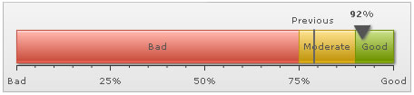
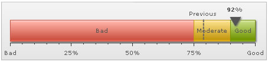
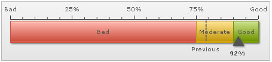
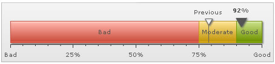
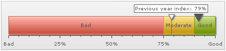
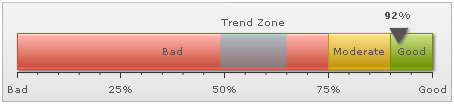

The linear gauge allows you to add the following trend elements on the chart:
Here we'll see how to add these and configure the same. |
| |
| To add a simple trend point (say last year's customer satisfaction index as 79%), you'll need to add the following to XML: |
| |
<trendpoints>
<point startValue="79" displayValue="Previous" color="666666" thickness="2" alpha="100"/>
</trendpoints>
"trendpoints": {
"point": [
{
"startvalue": "79",
"displayvalue": "Previous",
"color": "666666",
"thickness": "2",
"alpha": "100"
}
]
}
|
Here, we've first added the <trendpoints> element, which can contain any number of trend-points for the chart. Now, for each trend point, you need to add a <point> element with startValue/endValue as the value and other cosmetic properties defined.
The above trend point will show up on the chart as under: |
|  |
You can have the following properties for <point> element: |
| startValue |
Number |
The starting value for the trend-point. Say, if you want to plot a trend zone from value 102 to 109, the startValue will be 102. |
| endValue |
Number |
The ending value for the trend-point. Say, if you want to plot a trend-zone from value 102 to 109, the endValue will be 109. |
| displayValue |
String |
Display label for the trend-point. If you do not specify a value, the chart displays the numeric value. |
| showOnTop |
Boolean (0/1) |
Whether to display the value on top? |
| color |
Color Code |
Color of the trend point and its associated text. |
| alpha |
Number (0-100) |
Alpha of the trend line. |
| dashed |
Boolean (0/1) |
If you're showing the trend point as line, this attribute lets you control whether the line will be plotted as dashed? |
| dashLen |
Number (pixels) |
Length of each dash, if trend-point is plotted as dashed line. |
| dashGap |
Number (pixels) |
Length of each dash gap, if trend-point is plotted as dashed line. |
| useMarker |
Boolean (0/1) |
You can opt to show a triangular marker for each trend-point by setting this attribute to 1. |
| markerColor |
Color Code |
Fill color of marker. |
| markerBorderColor |
Color Code |
Border color of marker. |
| markerRadius |
Number (pixels) |
Radius of the marker. |
| markerTooltext |
String |
You can define tooltip for marker using this marker. |
|
The line can also be drawn as dashed one by setting: |
<point ... dashed='1' dashLen='3' dashGap='3' ..>
"point": [ {... "dashed": "1", "dashlen": "3", "dashgap": "3" ...} ] }
|
|
This will result in: |
|  |
You can opt to show trend label below the gauge using: |
<point ... showOnTop='0' ...>
"point": [ {... "showontop": "0" ...} ] }
|
|
This will result in: |
|  |
If you wish to increase the space between trend line and its value, you can set it in:
<chart ... trendValueDistance='25' ..> (or a value in pixels) |
For each trend point, you can also show a triangular marker using: |
<point startValue='79' displayValue='Previous' color='666666' useMarker='1' markerColor='F1f1f1' markerBorderColor='666666' markerRadius='7'/>
"point": [ { "startvalue": "79", "displayvalue": "Previous", "color": "666666", "usemarker": "1", "markercolor": "F1F1F1",
"markerbordercolor": "666666", "markerradius": "7" } ]
|
|
This will result in: |
|  |
You can also add a tooltip to this marker using: |
<point ... markerTooltext='Previous year index: 79%' ...>
"point": [ {... "markertooltext": "Previous year index: 79%" ...} ]
|
|
This will result in: |
|  |
| |
You can also create trend-zone to represent a range of values, instead of a single value. Shown below is a simple XML: |
<point startValue='49' endValue='65' displayValue='Trend Zone' color='00CCFF' alpha='30' />
"point": [ { "startvalue": "49", "endvalue": "65", "displayvalue": "Trend Zone", "color": "00CCFF", "alpha": "30"} ]
|
|
Here, we've added both startValue and endValue to create a trend zone. Also, we've specified the cosmetics. This will result in: |
|  |